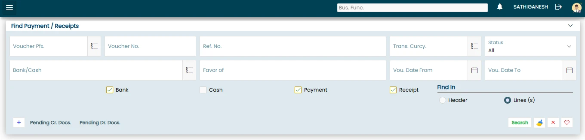
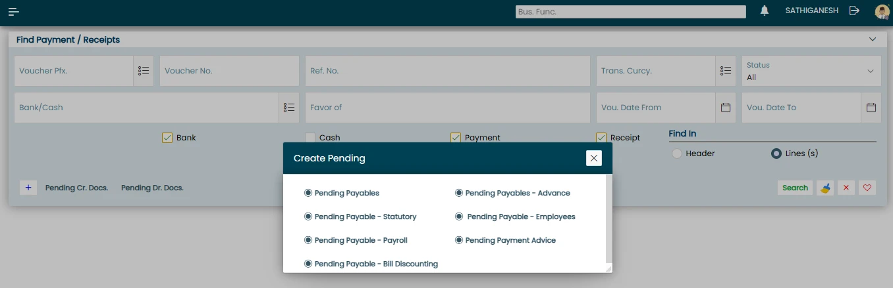
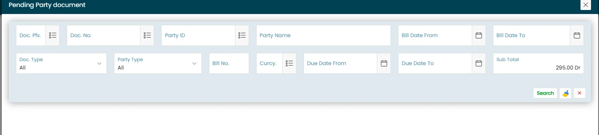
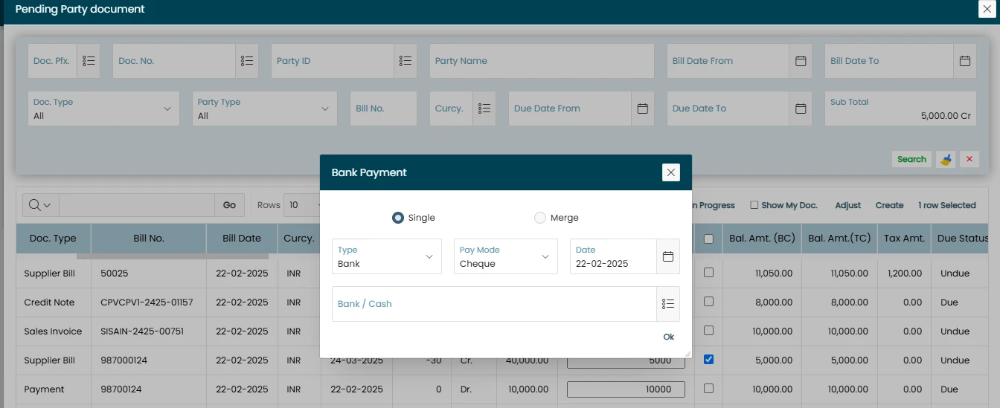
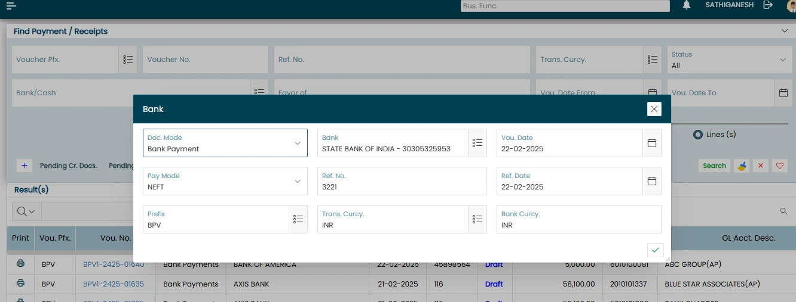
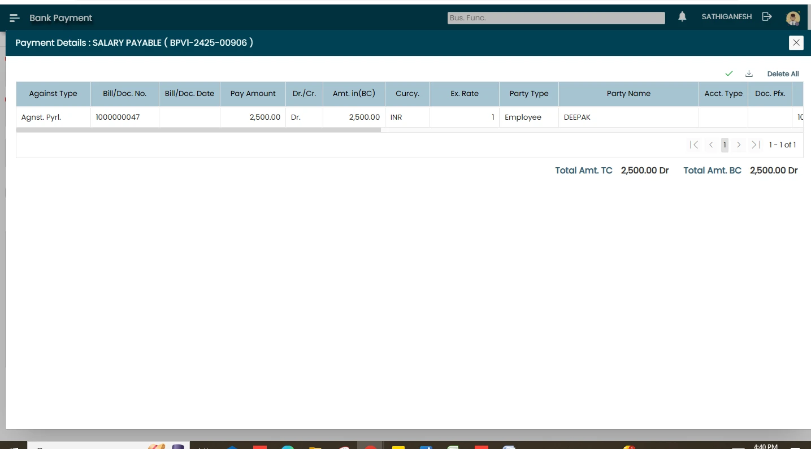

<div data-category="Financials" data-title="Payment & Receipts - Bank Payment" data-updated="December 01, 2025" data-contributors="RoadmapIT" data-breadcrumb="Home,Financials,Payment & Receipts - Bank Payment">
  <div class="page-content">
    <p>The Payment & Receipts Screen in the ERP system serves as a crucial interface for managing financial transactions. It allows users to process payments and receive receipts for outstanding documents linked to suppliers and customers. This screen is designed to streamline and facilitate the efficient handling of all pending transactions, ensuring that all financial records are up-to-date and accurately maintained.</p>
    <h5>Navigation path:</h5>
    <p class="fs-6">Financials \ Transactions \ Payment & Receipts</p>
    
    <ul style="list-style-type: none; align-content: center">
      <li class="mouse-icon">Search screen displays the list of Payment/Receipt Documents with the relevant details and status.</li>
      <li class="mouse-icon">Click on search to filter all the records.</li>
      <li class="mouse-icon">User can filter the respective documents by entering the search parameters at the header.</li>
      <li class="mouse-icon">Using search, system displays the results relevant to the search parameters entered.</li>
      <li class="mouse-icon">On-click; the corresponding transaction record will be displayed.</li>
      <li class="mouse-icon">
        Using
        
        icon, entered search parameters can be cleared.
      </li>
      <li class="mouse-icon">
        To close the screen, use
        <i class="bi bi-x fs-4 mx-2 text-danger"></i>
        icon.
      </li>
      <li class="mouse-icon">Click on the document to view the details.</li>
      <li class="mouse-icon">View a bank payment or receipts – enable only the bank check box in the header.</li>
    </ul>
    
    <ul style="list-style-type: none; align-content: center">
      <li class="mouse-icon">Click on Pending Cr.Docs.</li>
    </ul>
    <h2>Create Document from Pending Documents</h2>
    <p>The credit documents can be created for the below pending transactions:</p>
    <ol class="my-3">
      <li style="display: list-item; list-style-type: circle">Pending Payables- Credit documents can be created against the payable.</li>
      <li style="display: list-item; list-style-type: circle">Pending Payables – Advance – document can be created against the payable advance.</li>
      <li style="display: list-item; list-style-type: circle">Pending Payable- Statutory – for all the TDS, ESI statutory pending document.</li>
      <li style="display: list-item; list-style-type: circle">Pending Payable – Employees – for all the Payment for employees.</li>
      <li style="display: list-item; list-style-type: circle">Pending Payable – Payroll - All the payroll Payment.</li>
      <li style="display: list-item; list-style-type: circle">Pending Payment advice - for all payment advices.</li>
      <li style="display: list-item; list-style-type: circle">Pending Payable - Bill discounting - The bill represents the total cost of all goods received but not yet paid for. It is issued with the expectation of immediate payment by the due date.</li>
    </ol>
    
    <ul style="list-style-type: none; align-content: center">
      <li class="mouse-icon">Click on Pending Payables to view the Pending Party document.</li>
    </ul>
    
    <ul style="list-style-type: none; align-content: center">
      <li class="mouse-icon">Fetch the document based on due days, party, currency, Amount.</li>
    </ul>
    
    <ul style="list-style-type: none; align-content: center">
      <li class="mouse-icon">Enter the Current Payable Amount and select the check box and click create.</li>
      <li class="mouse-icon">Payment document can be created from this Page. Bank payment or Cash payment can be done by giving the bank or cash.</li>
    </ul>
    
    <ul style="list-style-type: none; align-content: center">
      <li class="mouse-icon">User can make the bank payment for single document by selecting the Single option, or can merge the documents by choosing the Merge option.</li>
      <li class="mouse-icon">Select the Pay mode.</li>
      <li class="mouse-icon">Select the Bank and click on Ok.</li>
      <li class="mouse-icon">The payment document will be created as shown below.</li>
    </ul>
    
    <ul style="list-style-type: none; align-content: center">
      <li class="mouse-icon">
        In the Lines, click on Add
        <i class="bi bi-plus fs-4 mx-2 text-primary"></i>
        button to add the pending document for the selected party.
      </li>
    </ul>
    
    <ul style="list-style-type: none; align-content: center">
      <li class="mouse-icon">Click on Pending party documents to create it against pending payables.</li>
      <li class="mouse-icon">Click on Pending Payables-Advance to create it against advance.</li>
    </ul>
    
    <ul style="list-style-type: none; align-content: center">
      <li class="mouse-icon">Select the necessary party document and Click on Ok and the document will be inserted.</li>
      <li class="mouse-icon">
        In the Lines, click on View
        
        button to view the documents that are against the reference, wherein a new reference can also added here.
      </li>
    </ul>
    
    <ul style="list-style-type: none; align-content: center">
      <li class="mouse-icon">
        Click on
        <i class="bi bi-plus fs-4 mx-2 text-primary"></i>
        to add payment details for new reference
      </li>
    </ul>
    
    <ul style="list-style-type: none; align-content: center">
      <li class="mouse-icon">Enter the Bill/Doc.No.</li>
      <li class="mouse-icon">Enter the Pay Amount.</li>
      <li class="mouse-icon">Select Dr/Cr.</li>
      <li class="mouse-icon">
        Click
        <i class="bi bi-check-lg fs-4 mx-2 text-success"></i>
        to save.
      </li>
      <li class="mouse-icon">Click on Create Journal button and the Journal will be created.</li>
      <li class="mouse-icon">View Journal button consists of two buttons such as (a) Detailed journal can be viewed from Vw.Jrnl (Det) button and (b) the summary of the journal can be viewed from Vw. Jrnl (Sum) button. If the same account is found present twice, in the Vw.Jrnl (Sum) button, the amounts gets added up and the account is displayed once.</li>
      <li class="mouse-icon">Click on create journal to view the journal/directly click post button, journal is created automatically and it will be posted.</li>
      <li class="mouse-icon">While approving the payment voucher document, the payment issue document would be created automatically.</li>
    </ul>
    
    <h2>Creating New Document</h2>
    <p>To create new Bank Payment or receipt, click on button and fill the mandatory fields in the Add dialog box.</p>
    
    <ul style="list-style-type: none; align-content: center">
      <li class="mouse-icon">Select the Doc Mode as Bank Payment or Bank Receipt.</li>
      <li class="mouse-icon">Select the Bank.</li>
      <li class="mouse-icon">Select the Pay Mode.</li>
      <li class="mouse-icon">Enter the Ref.No.</li>
      <li class="mouse-icon">
        Click
        <i class="bi bi-check-lg fs-4 mx-2 text-success"></i>
        and the document will be created as shown below.
      </li>
    </ul>
    
    <ul style="list-style-type: none; align-content: center">
      <li class="mouse-icon">Click on Get Doc. button and all the pending documents can be viewed.</li>
    </ul>
    
    <ul style="list-style-type: none; align-content: center">
      <li class="mouse-icon">Click on Pending Party document.</li>
    </ul>
    
    <ul style="list-style-type: none; align-content: center">
      <li class="mouse-icon">Fetch the document based on due days, Suppliers, currency, Amount.</li>
      <li class="mouse-icon">Enter the Current Payable Amount and select the check box and click Ok.</li>
      <li class="mouse-icon">Selected line insert in the line view.</li>
    </ul>
    
    <ul style="list-style-type: none; align-content: center">
      <li class="mouse-icon">
        Click
        <i class="bi bi-check-lg fs-4 mx-2 text-success"></i>
        to save.
      </li>
      <li class="mouse-icon">Click on Create Journal button and the Journal will be created and the deductions will be updated automatically, accordingly the box will be enabled.</li>
      <li class="mouse-icon">Click on create journal to view the journal / directly click post button, journal is created automatically and it will be posted.</li>
      <li class="mouse-icon">While approving the payment voucher document, the payment issue document would be created automatically.</li>
    </ul>
    <!-- against advance payment request -->
    <p>An advance payment to the supplier is the part of a contractually due sum that is paid in advance for goods or services, while the balance included in the invoice will only follow the delivery.</p>
    <p>This screen is to enter the payment document as Advance against payment request.</p>
    <h5>Navigation path:</h5>
    <p class="fs-6">Financials \ Transactions \ Payment & Receipts</p>
    
    <ul style="list-style-type: none; align-content: center">
      <li class="mouse-icon">Select the document and click Create</li>
    </ul>
    <!-- party advance payment request -->
    
    <ul style="list-style-type: none; align-content: center">
      <li class="mouse-icon">Party can be selected line level and their Advance details will be present in Add Button.</li>
      <li class="mouse-icon">Click the add button to select the document.</li>
      <li class="mouse-icon">After entering the amount, click on OK in add button will display the main screen.</li>
      <li class="mouse-icon">Enter the Realized Amount and click on Update button.</li>
      <li class="mouse-icon">Select the Create Journal check box and the journal gets created.</li>
      <li class="mouse-icon">While, entry completing the document the document would go to the workflow document approval to approve the voucher to pay.</li>
      <li class="mouse-icon">While approving the payment voucher document, the payment issue document would be created automatically with the Adv. account type.</li>
    </ul>
    <h3>New Ref Payment for Party</h3>
    <p>This Type is used to enter the payment against New reference for Party,</p>
    <h5>Navigation path:</h5>
    <p>Financials \ Transactions \ Payment & Receipts</p>
    <ul style="list-style-type: none; align-content: center">
      <li class="mouse-icon">
        Click
        <i class="bi bi-plus fs-4 mx-2 text-primary"></i>
        to create a Payment without any reference.
      </li>
    </ul>
    <h2>New Ref Payment</h2>
    
    <p>Suppliers can be selected line level and their invoice details will be present in add. Button.</p>
    <ul style="list-style-type: none; align-content: center">
      <li class="mouse-icon">Vou. Date; by default it will display system date. If needed, user can change the date.</li>
      <li class="mouse-icon">Select the Pay. Mode. Enter the Favour of</li>
      <li class="mouse-icon">Enter the cheque date or select the date from date tool. Value Date will be auto populated as Cheque date.</li>
      <li class="mouse-icon">Select the cheque no.</li>
      <li class="mouse-icon">Enter/Select the Transaction currency</li>
      <li class="mouse-icon">Enter the Narration. Save the Entries.</li>
      <li class="mouse-icon">Document number gets generated.</li>
      <li class="mouse-icon">Select the Supplier ledger in line level,</li>
      <li class="mouse-icon">Click the view button Select the Against Type as New ref.. Enter the Ref. No and Pay Amount.</li>
      <li class="mouse-icon">After entering the amount, click on OK in view button will display the main screen</li>
      <li class="mouse-icon">Select the Create Journal check box and the journal gets created.</li>
      <li class="mouse-icon">While, entry completing the document the document would go to the workflow document approval to approve the voucher to pay.</li>
      <li class="mouse-icon">While approving the payment voucher document, the payment issue document would be created automatically with Balance amount.</li>
    </ul>
    <h2>Bank Payment - Expenses</h2>
    <p>Expenses are the money spent or costs incurred by a business in an effort to generate revenue. Expenses represent the cost of doing business; they are the sum of all the activities that hopefully generate a profit.</p>
    <p>This screen allows the buyer to pay the expense of a party by entering the details of the payment, such as the amount, the date, the bank details, and the invoice document number.</p>
    <h5>Navigation path:</h5>
    <p class="fs-6">Financials \ Transaction \ Payment & Receipts</p>
    <h2>Expenses</h2>
    
    <ul style="list-style-type: none; align-content: center">
      <li class="mouse-icon">Vou. Date; by default it will display system date. If needed, user can change the date.</li>
      <li class="mouse-icon">Select the Pay Mode. Enter the Favour of.</li>
      <li class="mouse-icon">Enter the cheque date or select the date from date tool. Value Date will be auto populated as Cheque date.</li>
      <li class="mouse-icon">Select the cheque no.</li>
      <li class="mouse-icon">Enter/Select the Transaction currency.</li>
      <li class="mouse-icon">Enter the Narration. Save the Entries. </li>
      <li class="mouse-icon">Document number gets generated.</li>
      <li class="mouse-icon">Select the Expense ledger in line level and enter the amount. For expenses account, reference details are not needed.</li>
      <li class="mouse-icon">Select the Create Journal check box and the journal gets created.</li>
      <li class="mouse-icon">While, entry completing the document the document would go to the workflow document approval to approve the voucher to pay.</li>
    </ul>
    <h2>Bank Payment - Payroll</h2>
    <p>This screen is to pay the Payroll expenses for employee.</p>
    <h5>Navigation path:</h5>
    <p class="fs-6">Financials \ Transactions \ Payment & Receipts</p>
    <h2>Payroll</h2>
    
    <ul style="list-style-type: none; align-content: center">
      <li class="mouse-icon">Vou. Date; by default it will display system date. If needed, user can change the date.</li>
      <li class="mouse-icon">Select the Pay. Mode. Enter the Favour of.</li>
      <li class="mouse-icon">Enter the cheque date or select the date from date tool. Value Date will be auto populated as Cheque date.</li>
      <li class="mouse-icon">Select the cheque no.</li>
      <li class="mouse-icon">Enter/Select the Transaction currency.</li>
      <li class="mouse-icon">Enter the Narration. Save the Entries. </li>
      <li class="mouse-icon">Document number gets generated.</li>
      <li class="mouse-icon">Select the Salary payable GL account description.</li>
      <li class="mouse-icon">Click the add  button to select the against Type as Against Payroll.</li>
      <li class="mouse-icon">Press Load button and select the employees to be matched.</li>
      <li class="mouse-icon">Select the Create Journal check box and the journal gets created.</li>
      <li class="mouse-icon">While, entry completing the document the document would go to the workflow document approval to approve the voucher to pay.</li>
      <li class="mouse-icon">Delete button is use to delete the document.</li>
    </ul>
  </div>
</div>
